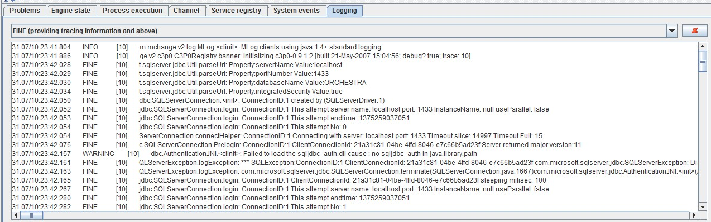
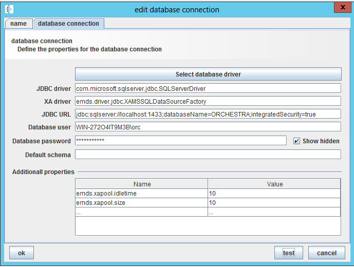
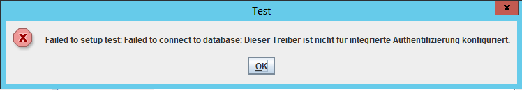
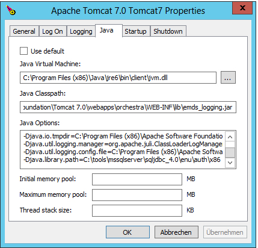
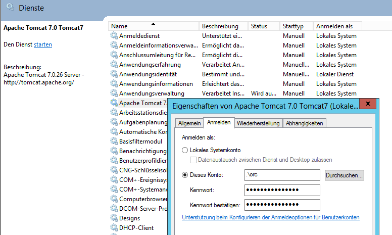
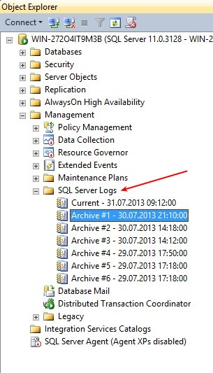
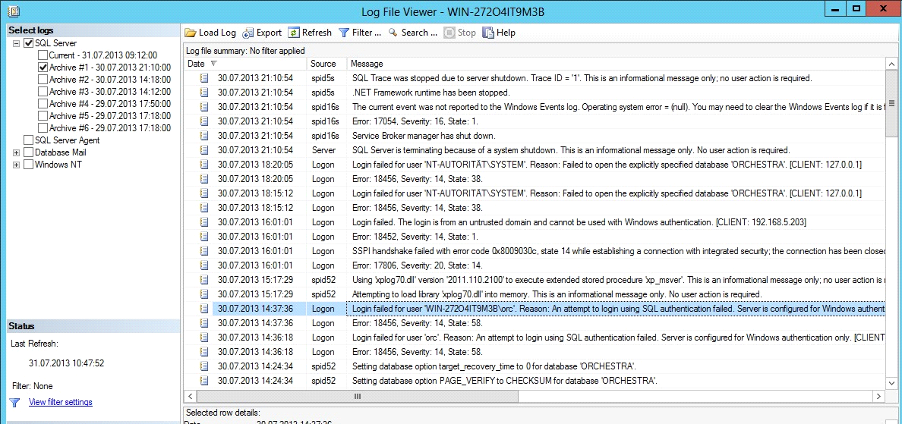
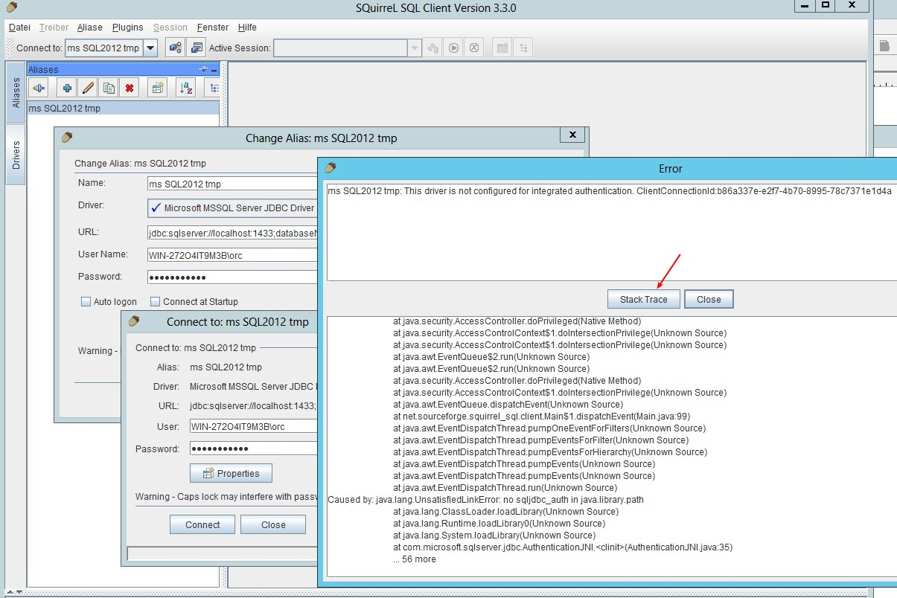

Integrated Security

Topic content
Remarks
•The integrated authentication of MS SQL Server works only if also the database client (in our case Orchestra) runs on Windows!
•Also, the Windows client must run in the according domain, otherwise authentication is not possible.
•Our tests were performed with Windows 2012 and SQL Server 2012.
•The connection test (in Designer as well as with Squirrel) needs some time in case of error. Presumably this is because the JDBC driver tries to connect several times.
1.Testing database channels with the Orchestra Designer
Logging in the Orchestra Designer
To improve debugging the user should enable logging in the Orchestra designer:
First of all in the file config\logging.properties.gui you should add the following parameter at the end of the file to activate the logging of the MS SQL Server JDBC driver:
com.microsoft.sqlserver.jdbc.level = FINE
com.microsoft.sqlserver.jdbc.SQLServerStatement.level=FINE
Then open the test panel in the designer and also set the trace level to FINE in the tab Logging

There you may encounter messages like:
WARNING [10] dbc.AuthenticationJNI.<clinit>: Failed to load the sqljdbc_auth.dll cause : no sqljdbc_auth in java.library.path
Connecting to the database
To establish a connection using the integrated authentication, you must append the string ;integratedSecurity=true to the JDBC URL. As User you must set a Windows user plus domain.

If the database connection is tested, an error message occurs:

In the test panel in the logging tab you will see the following entries:
31.07/10:23:42.157 WARNING [10] dbc.AuthenticationJNI.<clinit>: Failed to load the sqljdbc_auth.dll cause : no sqljdbc_auth in java.library.path
...
31.07/10:23:56.690 FINE [10] c.SQLServerConnection.Prelogin: ConnectionID:1 ClientConnectionId: c07e9ff0-9fe0-43a2-8d99-b23ddfb47f42 Server returned major version:11
31.07/10:23:56.709 FINE [10] QLServerException.logException: *** SQLException:ConnectionID:1 ClientConnectionId: c07e9ff0-9fe0-43a2-8d99-b23ddfb47f42 com.microsoft.sqlserver.jdbc.SQLServerException: Dieser Treiber ist nicht für integrierte Authentifizierung konfiguriert. ClientConnectionId:c07e9ff0-9fe0-43a2-8d99-b23ddfb47f42 Dieser Treiber ist nicht für integrierte Authentifizierung konfiguriert. ClientConnectionId:c07e9ff0-9fe0-43a2-8d99-b23ddfb47f42
...
This means that the required DLL was not found. You must configure the designer appropriately.
Adding the sqljdbc_auth.dll
To enable the designer to find the DLL, you should edit the start script designer.cmd. Add the following parameter to the invocation of the Orchestra designer:
-Djava.library.path=<directory with sqljdbc_auth.dll>
before
"%ORC_JAVA_EXEC%" -showversion -Xmx256M -cp "%CP%" emds.epi.graph.EPIEditor %*
after
"%ORC_JAVA_EXEC%" -Djava.library.path=C:\tools\mssqlserver\sqljdbc_4.0\enu\auth\x86 -showversion -Xmx256M -cp "%CP%" emds.epi.graph.EPIEditor %*
Note: The DLL sqljdbc_aut.dll should match the version of the JDBC driver and the used JAVA environment (32/64 bit)! (See also the paragraph Replacement of the JDBC driver)
2.Using SQL Server as Orchestra Runtime with integrated Security
If you want to run the Orchestra runtime with a SQL Server which requires integrated authentication, the tomcat as well as the designer need access to the sqljdbc_aut.dll.
for tomcat the following parameter has to be added to the Java options:
-Djava.library.path=<directory with sqljdbc_auth.dll>

If the tomcat stars with a system account, orchestra will not start and in the log files of SQL Server you will find the following message:
07/30/2013 18:20:05,Logon,Unknown,Login failed for user 'NT-AUTORITÄT\SYSTEM'. Reason: Failed to open the explicitly specified database 'ORCHESTRA'. [CLIENT: 127.0.0.1]
Using the Windows services configuration you must assign a different account to the tomcat service (the user will then have a certain right)
Caveat: If you try to configure this using the tomcat graphical user interface, the right will not be set and tomcat won't start!

Changing the environment_settings.xml
You must configure the database connection as usual with the exception that you have to append the parameter ;integratedSecurity=true to the JDBC URL and you must set the Windows user.
<group name = "database" enabled="true">
<parameter name="runtime.db.typ" value="MSSQL" choice="HSQL|ORACLE|MSSQL|DB2|MYSQL|Derby|INFORMIX" />
<parameter name="runtime.url" value="jdbc:sqlserver://localhost:1433;databaseName=ORCHESTRA;integratedSecurity=true" />
<parameter name="runtime.user" value="0008594654565046485300066b666b667477000000183c7c908e3f8997649064c59dd37157499b1bfe426fb21a48" /> <!-- WIN-272O4IT9M3B\orc -->
<parameter name="runtime.pwd" value="000855544d534b5646540006677464636f6d000000109ec7db378310b94dec816a91211e59ef" />
</group>
3.Replacing the JDBC driver
Under http://msdn.microsoft.com/de-de/sqlserver/aa937724.aspx you may downlad a newer JDBC driver for MS SQL Server (currently version 4.0).
You must unpack the new JDBC driver and install it. Depending on the language you get the following directory structure:
\---sqljdbc_4.0
\---enu
+---auth
| +---x64
| \---sqljdbc_auth.dll
| \---x86
| \---sqljdbc_auth.dll
+---help
+---xa
+---sqljdbc.jar
\---sqljdbc4.jar
Notes:
sqljdbc.jar
class library provides support for JDBC 3.0.
class library requires a Java Runtime Environment (JRE) of version 5.0. Using sqljdbc.jar on JRE 6.0 or JRE 7.0 will throw an exception when connecting to a database.
sqljdbc4.jar
class library provides support for JDBC 4.0 API. It includes all of the features of the sqljdbc.jar as well as the new JDBC 4.0 API methods.
class library requires a Java Runtime Environment (JRE) of version 6.0 or 7.0. Using sqljdbc4.jar on JRE 5.0 will throw an exception.
If you use a 32 bit JVM (Java Virtual Machine), you must use the file sqljdbc_auth.dll from the directory x86 even when the operating system is 64 bit.
If you use a 64 bit JVM with a x64 processor you must use the file sqljdbc_auth.dll from the directory x64.
Due to the fact that Orchestra already delivers a JDBC driver you first must remove the file sqljdbc.jar resp. sqljdbc4.jar from the Orchestra lib directory (\orchestra\WEB-INF\lib). You really have to remove it it is not sufficient to simply rename it!
Now you copy the new JDBC driver sqljdbc4.jar into the lib directory.
4.Notes
error messages
1.The windows computer where Orchestra is running is not assigned to the domain which the SQL Server is trusting
ms SQL2012 tmp: Login failed. The login is from an untrusted domain and cannot be used with Windows authentication. ClientConnectionId:25eac6b3-94bf-48a0-8c19-a5b86d32e0dd
com.microsoft.sqlserver.jdbc.SQLServerException: Login failed. The login is from an untrusted domain and cannot be used with Windows authentication. ClientConnectionId:25eac6b3-94bf-48a0-8c19-a5b86d32e0dd
at com.microsoft.sqlserver.jdbc.SQLServerException.makeFromDatabaseError(SQLServerException.java:216)
at com.microsoft.sqlserver.jdbc.TDSTokenHandler.onEOF(tdsparser.java:254)
at com.microsoft.sqlserver.jdbc.TDSParser.parse(tdsparser.java:84)
2.JDBC driver and DDL version don't match to each other. This occurred only with the tomcat, the designer didn't complain.
30.07/18:02:37.971 SEVERE [11] .StandardContext.listenerStart: Exception sending context initialized event to listener instance of class emds.epi.impl.serverstate.ContainerState
java.lang.UnsatisfiedLinkError: com.microsoft.sqlserver.jdbc.AuthenticationJNI.SNISecGenClientContext([B[I[BI[B[I[ZLjava/lang/String;Ljava/lang/String;Ljava/lang/String;Ljava/util/logging/Logger;)I
at com.microsoft.sqlserver.jdbc.AuthenticationJNI.SNISecGenClientContext(Native Method)
at com.microsoft.sqlserver.jdbc.AuthenticationJNI.GenerateClientContext(Unknown Source)
at com.microsoft.sqlserver.jdbc.SQLServerConnection.SSPIData(Unknown Source)
at com.microsoft.sqlserver.jdbc.SQLServerConnection.sendLogon(Unknown Source)
at com.microsoft.sqlserver.jdbc.SQLServerConnection.logon(Unknown Source)
3.Wrong Port in the JDBC URL:
SQLException:ConnectionID:3 com.microsoft.sqlserver.jdbc.SQLServerException: Fehler beim Herstellen der TCP/IP-Verbindung mit dem Host 'localhost', Port 9999.
Fehler: 'Connection refused: connect. Überprüfen Sie die Verbindungseigenschaften. Stellen Sie sicher, dass eine SQL Server-Instanz auf dem Host ausgeführt wird
und am Port TCP/IP-Verbindungen akzeptiert. Vergewissern Sie sich, dass am Port keine TCP-Verbindungen durch eine Firewall blockiert werden.
4.Non existing Server in the JDBC URL:
SQLException:ConnectionID:5 com.microsoft.sqlserver.jdbc.SQLServerException: Fehler beim Herstellen der TCP/IP-Verbindung mit dem Host 'localhostxx', Port 1433.
Fehler: 'null. Überprüfen Sie die Verbindungseigenschaften. Stellen Sie sicher, dass eine SQL Server-Instanz auf dem Host ausgeführt wird
und am Port TCP/IP-Verbindungen akzeptiert. Vergewissern Sie sich, dass am Port keine TCP-Verbindungen durch eine Firewall blockiert werden.
Checking the SQL Server log files
If a connection to the SQLServer is possible (no blocking firewall9, the log files of the SQL Server deliver interesting information:
07/30/2013 18:20:05,Logon,Unknown,Login failed for user 'NT-AUTORITÄT\SYSTEM'. Reason: Failed to open the explicitly specified database 'ORCHESTRA'. [CLIENT: 127.0.0.1]
07/30/2013 14:37:36,Logon,Unknown,Login failed for user 'WIN-272O4IT9M3B\orc'. Reason: An attempt to login using SQL authentication failed. Server is configured for Windows authentication only. [CLIENT: 192.168.4.14]


More information in the internet
•Creating the connection URL
http://msdn.microsoft.com/de-de/library/ms378428.aspx
•Tracing the JDBC driver
http://msdn.microsoft.com/de-de/library/ms378517.aspx
•Microsoft JDBC Driver for SQL Server
http://msdn.microsoft.com/de-de/sqlserver/aa937724.aspx
Test with Squirrel
To exclude Orchestra errors it might be helpful to use a different tool to check the connection. This might also show more Information. Squirrel is such an alternative tool. Of course this tool also must know the DLL. For squirrel you edit the file squirrel-sql.bat and add the parameter -Djava.library.path=<path> to the invocation:
...
start "SQuirreL SQL Client" /B "%LOCAL_JAVA%" -Xmx256m -Djava.library.path=C:\tools\mssqlserver\sqljdbc_4.0\enu\auth\x86 -Dsun.java2d.noddraw=true -cp %SQUIRREL_CP% -splash:"%SQUIRREL_SQL_HOME%/icons/splash.jpg" net.sourceforge.squirrel_sql.client.Main %TMP_PARMS%
...
